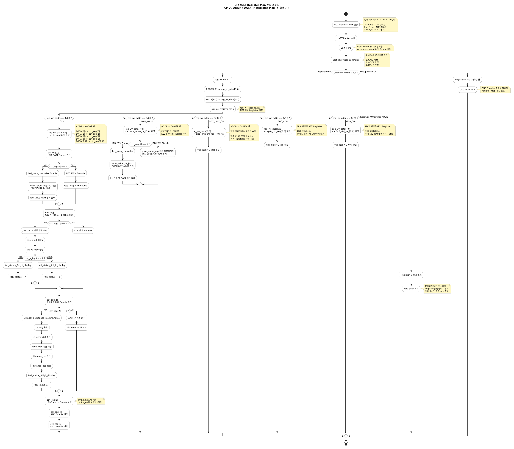
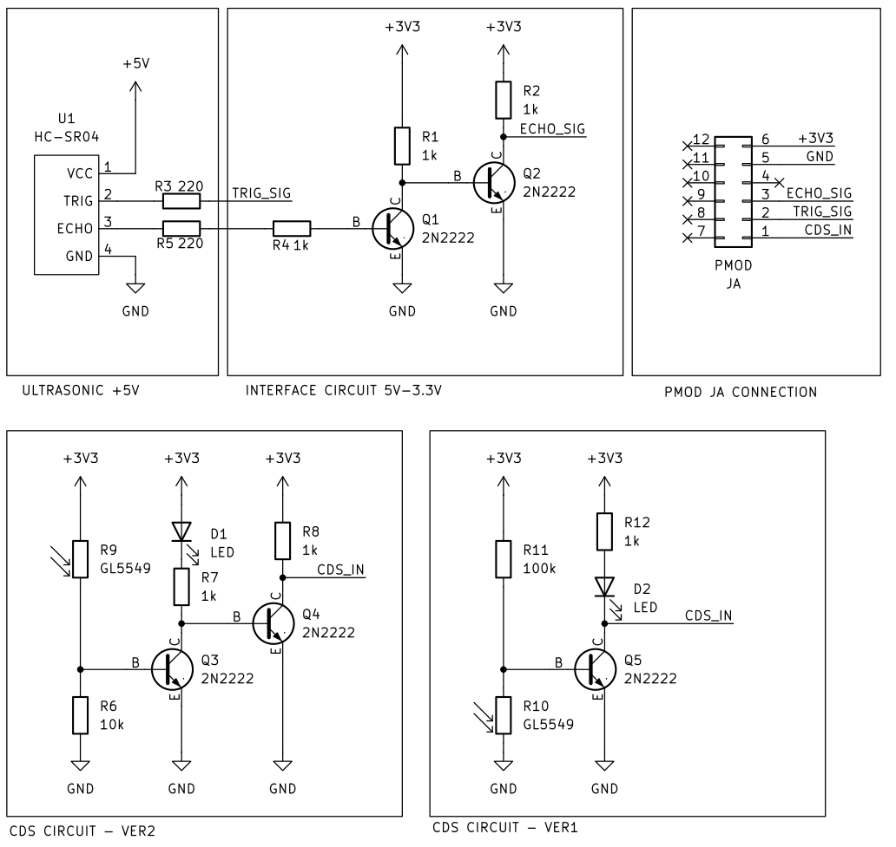

Trigger
us_trig를 10us 동안 HIGH로 출력합니다.
RTL 주변기기 회로설계 · 11
FPGA가 10us Trigger Pulse를 만들고, HC-SR04의 Echo HIGH 시간을 1us 단위로 측정하여 거리를 계산합니다.
CTRL[2]로 초음파 기능을 켜고 끄며 거리값은 FND 하위 3자리에 표시할 수 있도록 BCD로 변환합니다.
us_trig를 10us 동안 HIGH로 출력합니다.
us_echo HIGH 시간을 측정합니다.
distance_cm ≈ echo_us_cnt / 58로 계산합니다.
PC / moserial
→ UART RX
→ uart_reg_write_controller
→ simple_register_map
→ CTRL[2] = dist_en
→ ultrasonic_distance_meter
→ distance_cm / distance_bcd
→ FND
| 순서 | 동작 |
|---|---|
| 1 | FPGA가 Trigger를 10us 동안 HIGH 출력 |
| 2 | HC-SR04가 40kHz 초음파 8 Cycle 송신 |
| 3 | 초음파가 물체에 반사 |
| 4 | 반사파가 돌아오는 동안 Echo HIGH |
| 5 | FPGA가 Echo HIGH 시간을 측정 |
| 6 | Echo 시간을 cm 거리로 변환 |
TRIG ____|‾‾‾‾‾‾‾‾‾‾|________________
10 us
BURST _________||||||||_________________
40 kHz × 8 cycle
ECHO ______________|‾‾‾‾‾‾‾‾‾|________
← HIGH 시간 →
| 신호 | PMOD | FPGA Pin | 방향 |
|---|---|---|---|
| CdS | JA1 | J1 | 입력 |
| Ultrasonic Trigger | JA2 | L2 | 출력 |
| Ultrasonic Echo | JA3 | J2 | 입력 |
| 거리 | Echo HIGH | 100MHz Clock Count |
|---|---|---|
| 1cm | 약 58us | 약 5,800 |
| 10cm | 약 580us | 약 58,000 |
| 50cm | 약 2,900us | 약 290,000 |
| 100cm | 약 5,800us | 약 580,000 |
현재 RTL은 100MHz를 먼저 1us Tick으로 바꾸고 Echo HIGH 시간을 us 단위로 셉니다.
assign calc_distance_cm_wide =
echo_us_cnt / 32'd58;| State | 역할 |
|---|---|
S_IDLE | 측정 간격 대기 |
S_TRIG | Trigger 10us HIGH |
S_WAIT_ECHO_HIGH | Echo HIGH 대기 |
S_MEASURE_ECHO | Echo HIGH 시간을 1us 단위로 측정 |
MEASURE_GAP_US = 60_000
TRIG_PULSE_US = 10
ECHO_TIMEOUT_US = 30_000| 실패 | Echo 형태 | 처리 |
|---|---|---|
| Echo 없음 | 계속 LOW | 대기 Timeout |
| Echo 너무 김 | HIGH가 너무 오래 유지 | 측정 Timeout |
timeout_error <= 1'b1;
distance_valid <= 1'b0;
busy <= 1'b0;
state <= S_IDLE;| Address / Bit | 기능 | 이번 단계 |
|---|---|---|
CTRL[0] | LED PWM Enable | 유지 |
CTRL[1] | CdS Enable | 유지 |
CTRL[2] | Ultrasonic Enable | 추가 |
0x02 | DIST_LIMIT_CM | 저장만 수행 |
0x10 | SPI0_CTRL | 예약 |
0x20 | I2C0_CTRL | 예약 |
| Packet | 동작 | FND |
|---|---|---|
01 00 04 | 초음파만 ON | -xxx |
01 00 06 | CdS + 초음파 ON | Lxxx / dxxx |
01 00 07 | LED PWM + CdS + 초음파 ON | Lxxx / dxxx |
send_echo_after_trig(5800);
check_distance_range(
10'd95,
10'd105
);rx_data / rx_valid / rx_ready UART Core 인터페이스에 연결했습니다.
/58로 cm 거리값을 계산합니다.CTRL[2]가 초음파 거리계 Enable입니다.